Collaboration · Duet · Bodiography collaboration
Midsummer Night’s Memory
Memory becomes a meeting point between two choreographic histories.

The project
The duet emerged from the meeting of Maria Caruso and Antonello Apicella, bringing the past work of both choreographers into an intense shared creation.
The choreography is conceived as a four-handed collaboration, using memory as the connective tissue between two artistic histories.
Enquire about this projectCreative context
Midsummer Night’s Memory
The duet grew from the meeting of Maria Caruso and Antonello Apicella within Matrafisc’s collaboration with Bodiography. Conceived as a four-handed choreographic process, it uses memory as the meeting point between two artists, two histories and the material each carries into a shared creation.